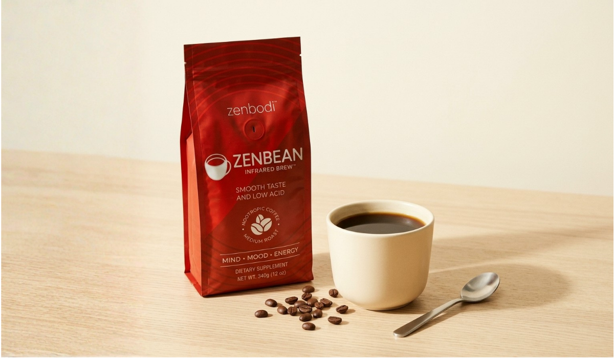
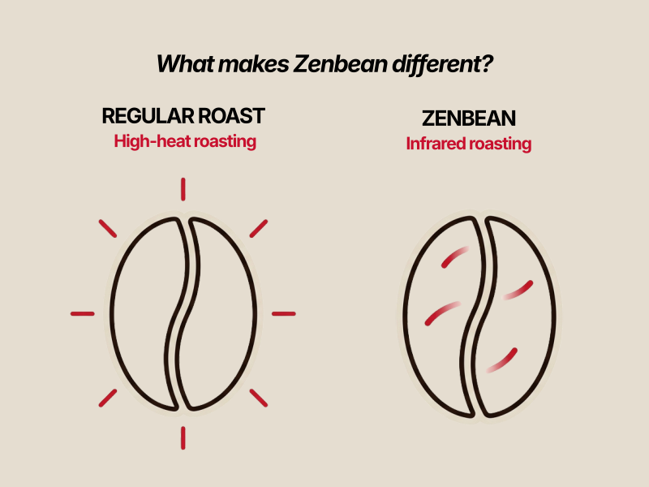
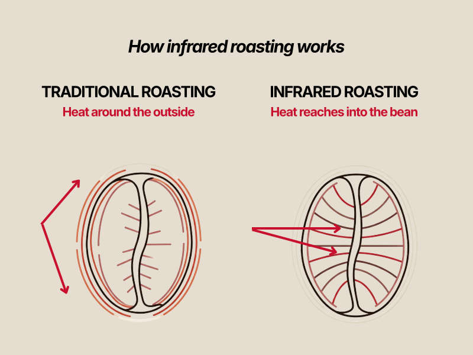
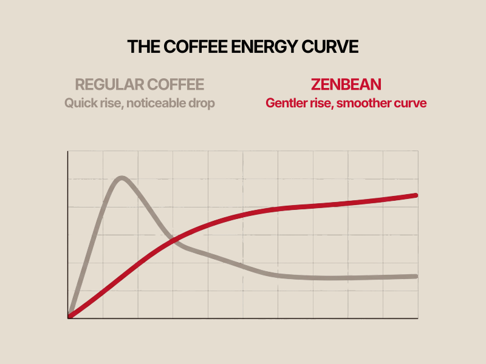
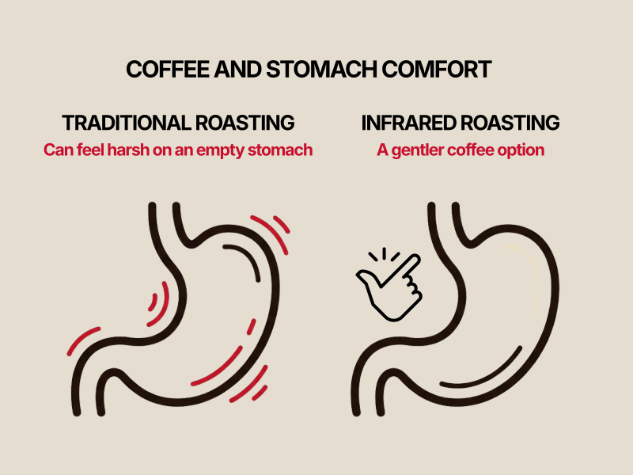
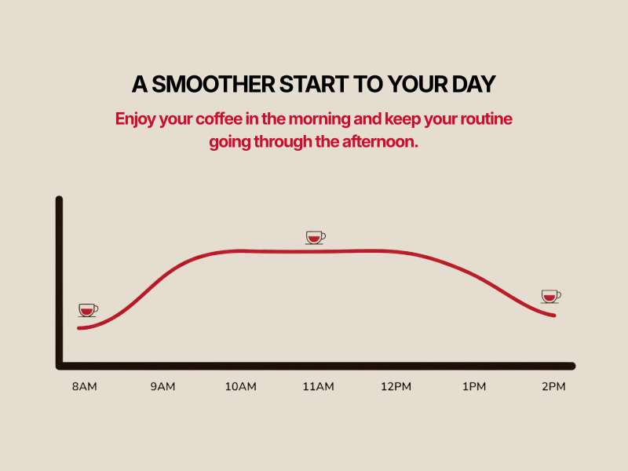

Infrared-roasted Arabica, smoother on the way down, steady for hours after.
See the Gentle Start Kit
For a lot of daily coffee drinkers, the first cup comes with a trade. The aroma and the ritual, sure, but also the sour feeling by 9am, the tightness, the regret of drinking it before breakfast.
Most people blame the caffeine and try to drink around it. Cold brew, food first, half a cup instead of a full one. The discomfort usually has less to do with caffeine and more to do with how the beans were roasted.

Cut back, switch to decaf, drink it with breakfast, the usual fixes all assume caffeine is the problem. It's a mismatch. The discomfort traces back to roasting temperature. High-heat roasting breaks the bean down into chlorogenic acids, and those acids are what irritate the stomach lining hours later. A darker roast run hotter simply produces more of them.

Roasting is a chemical reaction, not a formality, and it decides how the bean behaves in your stomach hours later. Infrared roasting heats the bean more evenly and at a lower temperature than standard drum roasting, so fewer acids form in the first place. The bean still develops full flavor. It just develops less of what irritates you.

Regular coffee spikes cortisol fast, then drops you just as fast. L-Theanine works with caffeine instead of against it, slowing the release so the energy comes on steadier and holds longer. You get alert without the jittery edge, and there's no 11am wall to hit.

An empty stomach and a hot, acidic cup is a rough combination for most people. MCT oil gives your body something to convert into steady fuel right away, so the coffee has less of a chance to sit and irritate an empty stomach. Black coffee, first thing, stops being a gamble.

Add it up and the day changes shape. No spike at 8, no crash at 11, no second or third cup just to get back to normal. One cup, roasted differently, carries you through the stretch regular coffee can't.
Everything above comes down to one table.
| Regular Coffee | Zenbean | |
|---|---|---|
| Roast method | High-heat drum roast | ✓Low-heat infrared roast |
| Acid byproducts | Higher | ✓Minimized |
| Energy curve | Spike, then crash | ✓Steady for 4–6 hours |
| On an empty stomach | Often rough | ✓Built for it |
| Jitters | Common | ✓Smoothed by L-Theanine |
| Format | Ground or whole bean | ✓24-pod K-Cups or 12oz ground |
"I've been drinking coffee on an empty stomach for years and paying for it every time. First week with this and nothing. I still don't fully believe it."
Marisol T."Switched because of the roast explanation, honestly. Made more sense than anything I'd read before. Turns out it held up."
Jonah R."I don't get the 11am crash anymore. Didn't expect that part, thought it was just about the stomach thing."
Priya K.Infrared-roasted organic Arabica coffee blended with L-Theanine, Rhodiola Rosea and MCT oil. Same coffee ritual, roasted a different way, with a blend built around a smoother experience.
Yes, it's built to replace your regular daily cup, not sit alongside it. Most people notice the difference from the first week.
You have 30 days to decide. If it's not for you, it's not for you, no conditions attached.
Full-bodied, with a smoother finish and less of the sharp bite regular coffee leaves behind. Same ritual, easier on the way down.
No. Each cup delivers approximately 80 to 120mg of natural caffeine, in line with a standard cup. The difference is how it's released, not how much is there. Individual sensitivity to caffeine varies, so pay attention to what feels right for you.
The mechanism is roast chemistry, not a proprietary blend or a secret ingredient. Lower-heat roasting produces fewer of the acids linked to stomach irritation, and that's measurable. Zenbean isn't a treatment for reflux, gastritis, or any medical condition, and coffee affects everyone differently. If you have persistent stomach pain or reflux, it's worth talking to a healthcare professional.
Exactly how you brew your coffee now. Ground in any drip machine or French press, K-Cups in any standard pod brewer. No new equipment needed.
Both. 24-pod K-Cups or a 12oz ground bag, whichever fits your setup.
Orders are fulfilled within 24 hours and typically arrive within 2 to 4 business days after dispatch.
Yes, free shipping is included with the Gentle Start Kit.
30 days from delivery. If it's not the right fit, reach out and you'll be refunded in full.
Reach out as soon as possible. Once an order has shipped we may not be able to redirect it, but we'll do what we can to help.
How it's roasted and what's blended into it. Infrared roasting produces a naturally lower-acid, smoother cup, and the L-Theanine, Rhodiola Rosea and MCT oil work together to even out the energy curve.
No. The Gentle Start Kit is a one-time purchase. No auto-renewal, no recurring charges.
Every batch uses organic Arabica coffee with no proprietary blends or fillers hiding what's inside. As with any coffee or supplement, check with a healthcare professional if you're pregnant, nursing, or managing a health condition.
For a limited time, try the coffee your stomach can actually live with.
A full month of coffee plus the extras, in one order.
One-time purchase, no subscription. 30-day money-back guarantee.
Get the Gentle Coffee Starter Kit for $21Zenbean is not a medical treatment. Individual results vary. If you experience persistent digestive discomfort, consult a healthcare professional.